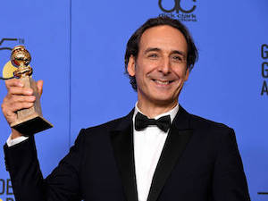

Biographie
Alexandre Desplats aux Oscars en 2018
Alexandre Desplat est un compositeur de musiques de films et chef d’orchestre français très reconnu, né le 23 aout 1961 à Paris. Il est le compositeur régulier de grands noms du cinéma tels que Wes Anderson, Roman Polanski, George Clooney ou encore Guillermo del Toro. Il a composé de nombreuses bandes sons très connues, comme celles des deux derniers volets d’Harry Potter par exemple. Il a reçu de très nombreux prix et il a encore plusieurs films en compétition.
The Grand Budapest Hotel
Wes Anderson à l’avant première de The Grand Budapest Hotel, en 2014 à Paris
LE FILM
«The grand Budapest Hotel» est une comédie dramatique écrite et réalisée par Wes Anderson, sortie en 2014.Le film parle de l’histoire de M.Gustave, concierge à l’hôtel Grand Budapest, situé dans le pays imaginaire de Zubrowka pendant l'entre-deux-guerres. M. Gustave enseigne son métier à son jeune assistant groom, Zero Mustapha. Très prisé par ses clientes âgées, M. Gustave hérite d’un tableau de valeur d'une de celles-ci suite à sa mort. M. Gustave et son jeune protégé Zero Moustafa se retrouvent impliqués dans une bataille avec les héritiers de la vieille dame. M. Gustave et ses amis de l'hôtel vont essayer de plaider son innocence et récupérer le tableau, sur fond de bouleversements politiques successifs qui transforment l'Europe en cette première moitié du XXe siècle. C’est vraiment un super film ! Les décors et l’univers tout entier du film nous transportent et les personnages sont très attachants. Le ton d’umour qui nous suit tout au long du film est très agréable.
Bande son
La bande originale a obtenu l’Oscar de la meilleure musique de film en 2015. L’instrument mis en lumière dans les musiques de ce film est la balalaïka, sorte de petite guitare traditionnelle russe. On retrouve également des cors de alpes, un orgue, des cloches, un chœur d’hommes et un cybalum (instrument à cordes frappées, sorte de piano).